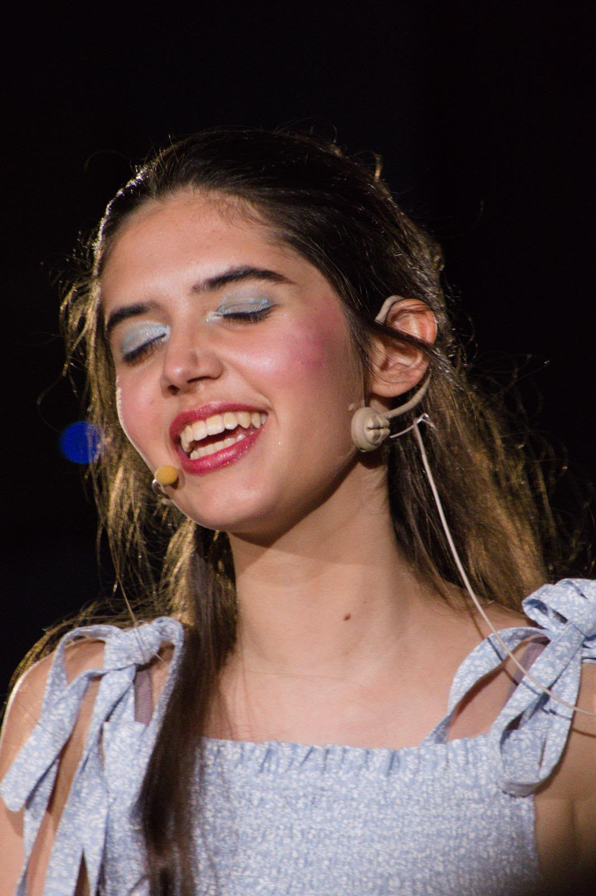
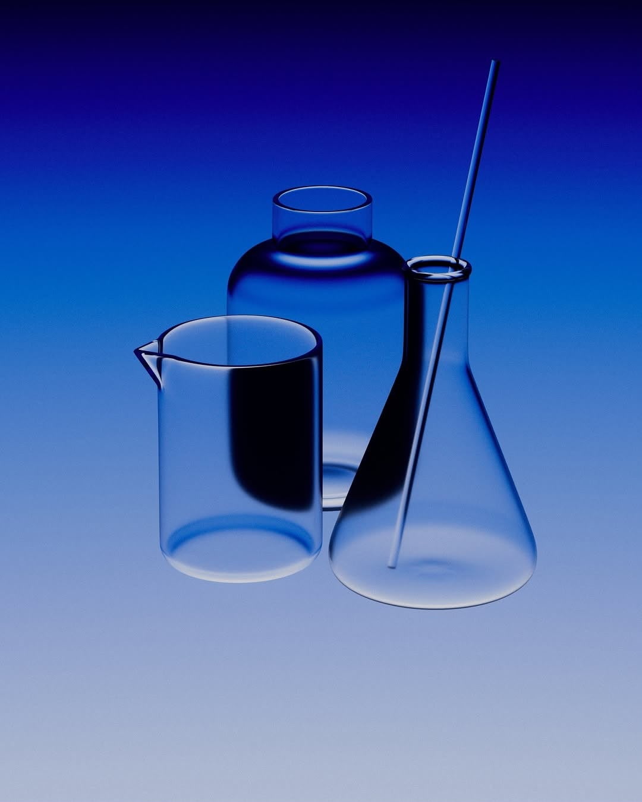
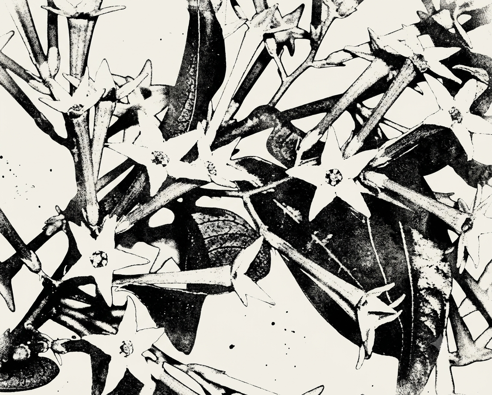

I build ideas where medicine, technology and creative communication meet.
My work combines scientific thinking with visual storytelling, digital content and product-oriented problem solving. Whether teaching science to kindergardeners, supporting marketing operations or experimenting with software and game development, I enjoy translating complexity into experiences people understand.
I support day-to-day operations in the renewable energy sector, handling administrative workflows, customer communication and documentation to keep solar panel deliveries running smoothly and organised.
My special focus, however, is content creation for Instagram and Facebook — growing an audience organically, without any paid advertising budget.
Over 4 years experience in programming and operation of lighting and sound equipment for live performances — and, on stage, a performer myself. Over four years spent between the mixing desk and the spotlight in school musical productions.

I teach engineering and physics weekly to children through Lego by helping them build for eg. gears, levers, pulleys, bridges, balance and motion.
I took part in the Teddybärspital (Teddy Bear Hospital), where children aged 4 to 8 bring in their teddy bears as patients. Volunteering medical students then treat the bear: taking its history, listening to its heart, plastering a broken paw, giving it a vaccination, bandaging, X-raying.
An autodidact programming project born from a simple goal: a fun, freely available and immersive fairytale game, scored entirely with classical music — the Dance of the Sugar Plum Fairy and Dance of the Knights — so that a younger generation can discover these pieces through play.
Inspired by Sleeping Beauty and Tchaikovsky's score. Completely free to play, with no ads, on itch.io — for browser and Windows.
Self-initiated project applying concepts from MIT's "How to Grow (Almost) Anything" course (followed as an extracurricular/global listener); current project idea includes transforming bacteria with plasmids encoding fluorescent proteins, and culturing them to explore synthetic biology and cloning techniques.

A symphonic metal band that is just getting started.
My role in it:
